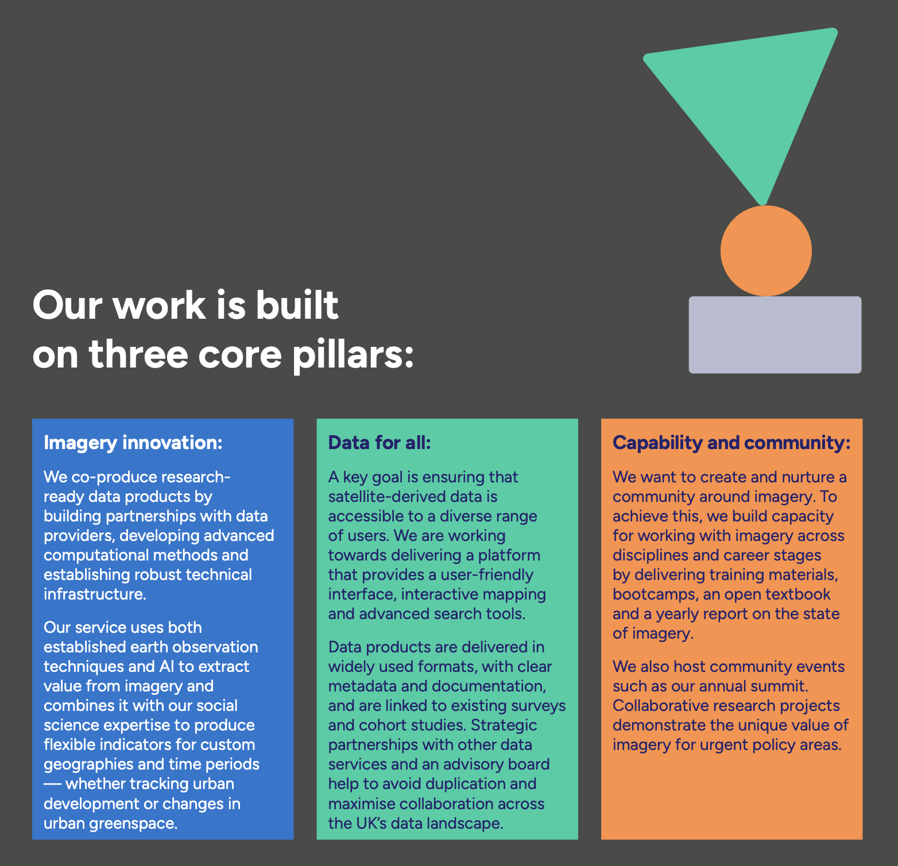
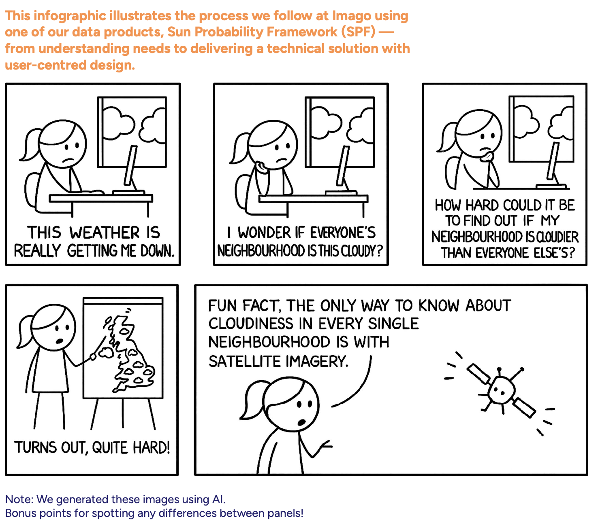
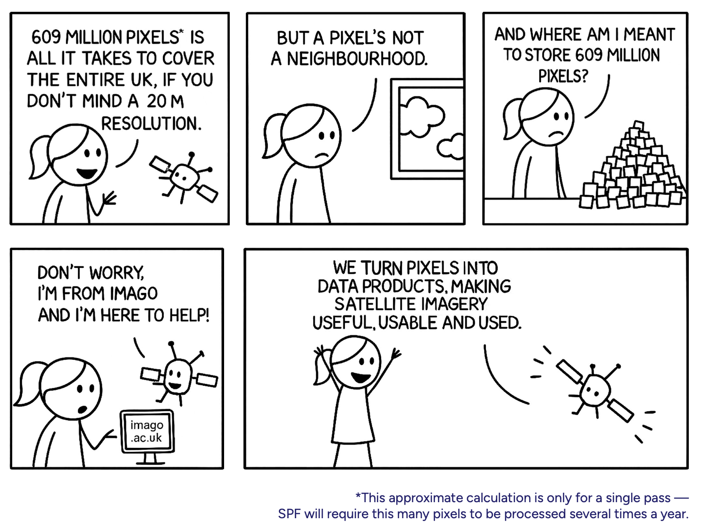

From grids to areas
This page was written for Imago — the UK Imagery Data Service for sustainability, prosperity and wellbeing — and uses UK examples throughout (Thames, MSOAs, LSOAs). The conceptual steps it describes are general: the same chain (raw imagery → cleaned composite → modelled indicator → aggregated to areas) underlies the Beirut damage pipeline you’ve been working with in Parts 1 and 2. Read the UK examples as illustrative; the logic transfers directly.
Imago is the Imagery Data Service for sustainability, prosperity and wellbeing. At Imago, our mission is to make (satellite) imagery more useful, useable, and used.

This page is a short tour of how satellite imagery becomes the kind of dataset social science researchers or policymakers can actually use — what gets collected, what shape it arrives in, and how Imago turns it into neighbourhood-level statistics ready for analysis. The Beirut workflow you’ve seen does the same in miniature: pixels → classified change → operational-zone polygons.
Pixel by pixel, clouds by cloud
Satellite data looks like a map—but it definitely isn’t one yet.
Before it becomes ready for analysis, it passes through a long chain of processing steps. What satellites actually beam down are raw, multi-band images: massive files full of noise, distortions, clouds, and values that don’t mean little until we transform them.


How satellite data is collected
Satellites don’t take photographs in the everyday sense. They are flying sensors that record the Earth’s surface in a very specific, highly structured way. Four properties define what any satellite dataset is:
- by sensors sensitive to specific ranges of wavelengths of light (the technical term is spectral bands)
- at a specific time and from a specific geographic area (spatiotemporal)
- at a particular resolution — one pixel corresponds to a square of ground, measured in metres per pixel (the whole image is a scene or frame)
- with a particular frequency — the refresh rate, revisit time, or repeat cycle at which the satellite passes over the same place again
The illustration below shows what each of these means in practice. Click a tab to switch between them.
Spatiotemporal. Every observation is anchored to a where and a when. The same patch of ground (the highlighted sample spot) is recorded again and again on a regular revisit cycle — every few days for some sensors, every two to three weeks for others. Day 0, Day 16, Day 32, and so on. Comparing two passes of the same place at different times is what makes change detection possible: short revisit cycles let you track fast-changing things (floods, fires, crops), while longer cycles usually trade frequency for higher resolution.
Resolution. Each pixel covers a square of ground, measured in metres per pixel. Public Earth-observation satellites span an enormous range — from coarse 1 km pixels (where a whole town is one cell, useful for global vegetation or sea-surface temperature) through medium 30 m pixels down to 1 m or finer (commercial sensors that resolve individual rooftops and trees). Higher resolution means more detail, but also bigger files, more compute, and often less frequent revisits.
Spectral bands. Some satellites collect "bands" — the strength of light in one slice of the electromagnetic spectrum. Optical satellites typically record six to twelve bands at once: red, green, blue, plus several invisible to the human eye (near-infrared, shortwave infrared, thermal). Different bands reveal different things — vegetation reflects strongly in near-infrared, water absorbs it; thermal bands measure surface temperature. Note that not every satellite has spectral bands — radar (SAR) sensors work differently.
From pixels to neighbourhoods
What comes down isn’t a map — it’s a noisy grid of numbers, half of it hidden under cloud. Turning that into something a researcher or policymaker can use takes four steps. Watch the same patch of ground move through each of them:
Stage 2 — clean. Combining many passes through time gives a clean composite.
Stage 3 — model. A model converts the cleaned spectral values into a meaningful indicator (here, surface temperature; in other Imago products, vegetation, built-up area, or cloud probability).
Stage 4 — aggregate. Pixels are pooled into administrative units — MSOAs in England — so the data can be joined to censuses, surveys, and policy frameworks.
Why Imago products simplify the process
Working directly with raw satellite data is difficult for most users. Files are huge — a single Sentinel-2 scene is several gigabytes. Cleaning, mosaicking, and modelling pixel-level data requires significant compute and a working knowledge of remote-sensing algorithms. And even after processing, linking pixel-level information to meaningful social or administrative units is technically demanding.
Pre-processed and validated products save time, reduce errors, and ensure consistent, reliable results. Imago provides:
- Pre-computed, ready-to-use MSOA/LSOA-level statistics
- No need to download or handle large imagery or run complex algorithms
- Preserved local detail — the clear benefit of small-area data, not regional averages